Вісім root-екранів, light, 100%, той самий browser viewport 412 × 915. Обидва набори показують реальний рендер прототипу; висота видимої області може залежати від lab chrome. Повне theme/text/state покриття — у фінальному маніфесті.
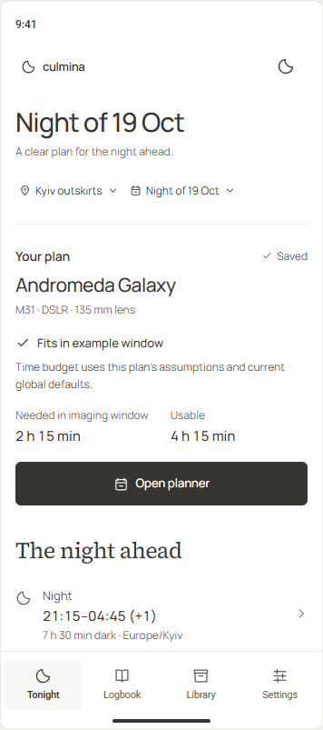
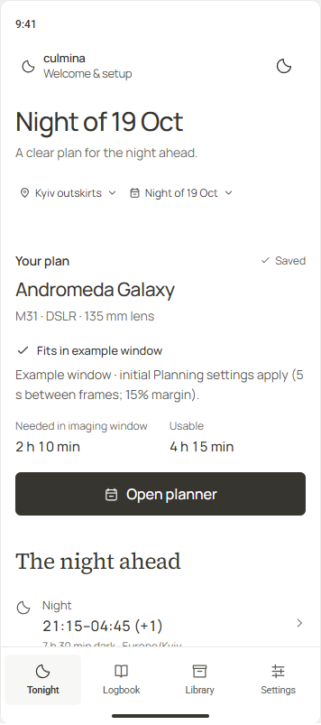
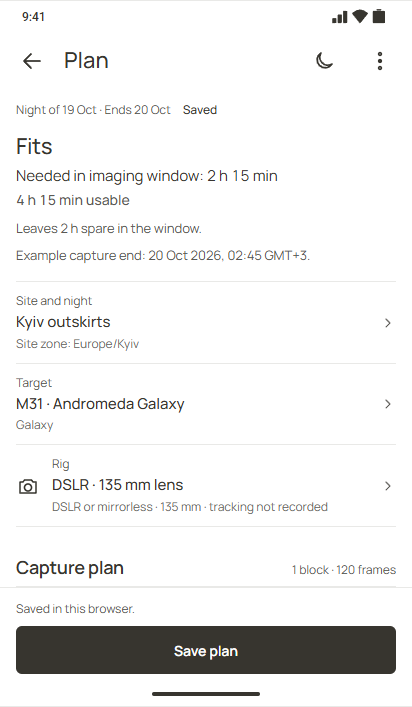
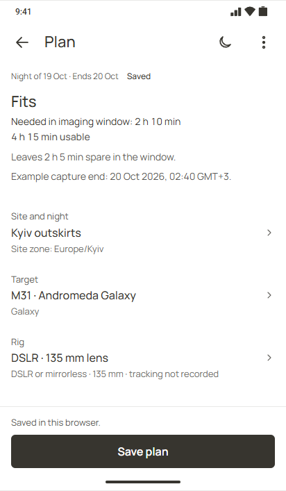
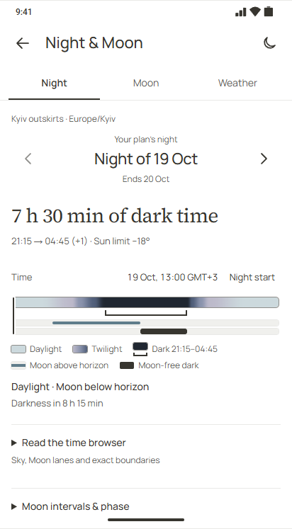
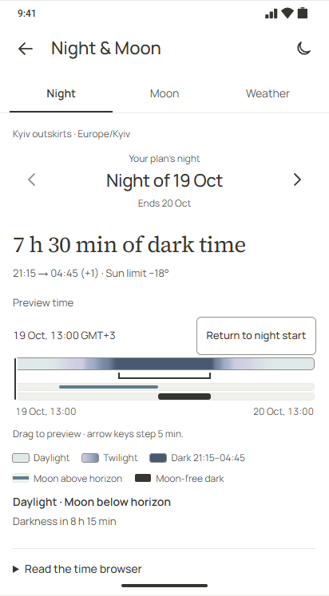
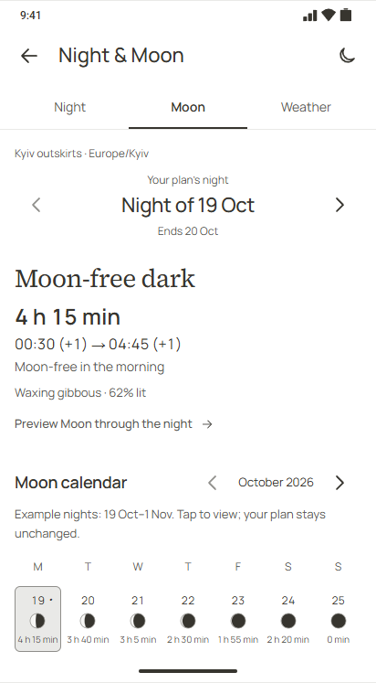
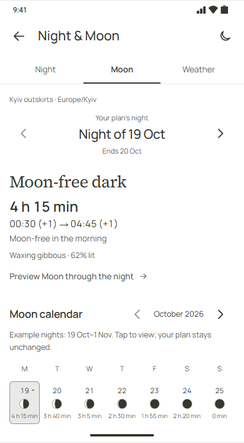
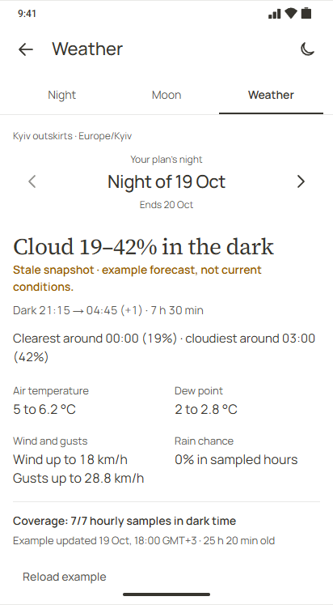
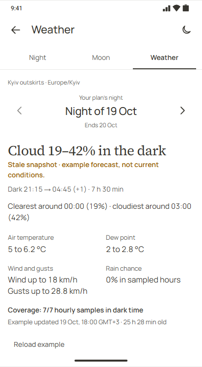
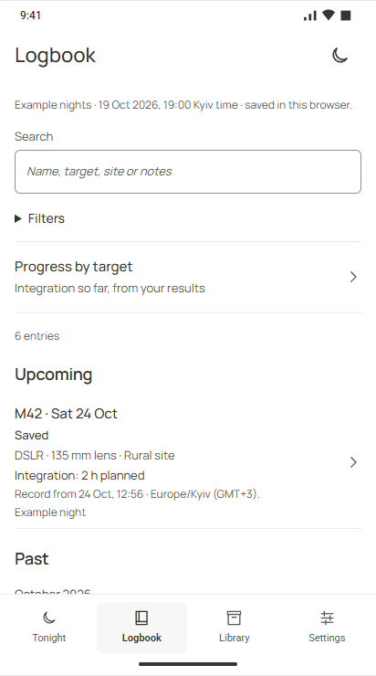
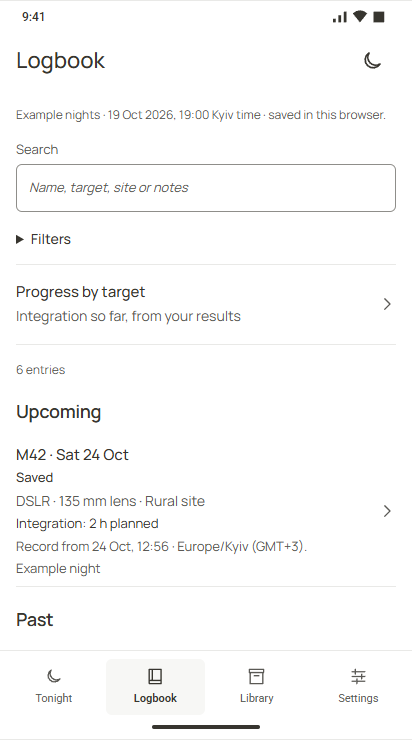
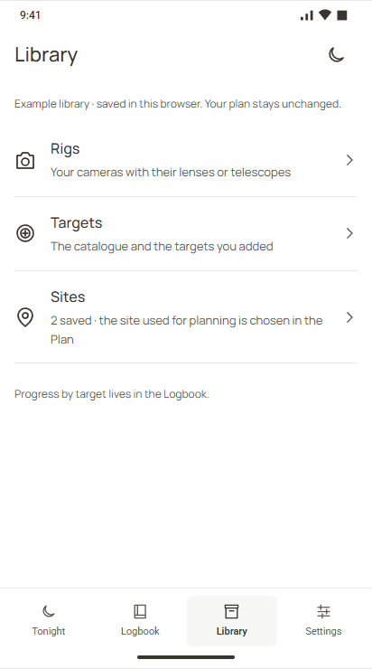
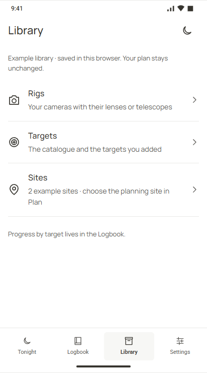
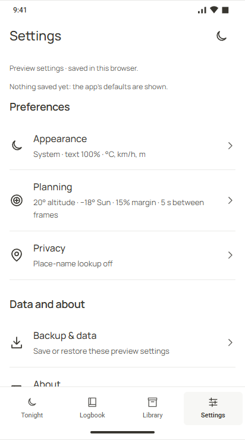
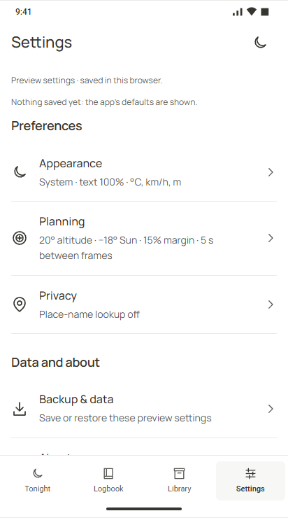
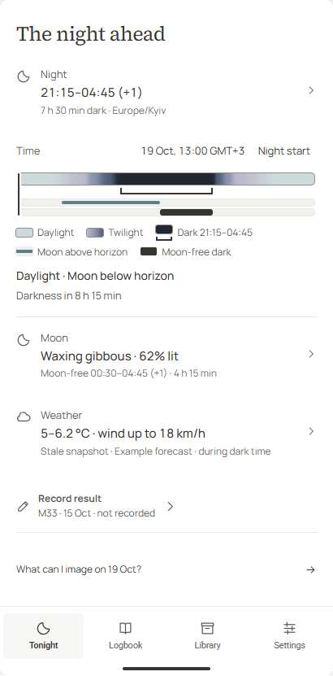
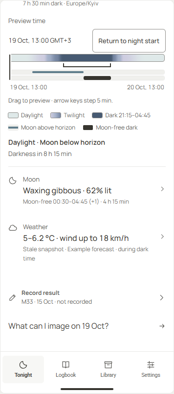
Вологість повернута як окремий відсотковий ряд із тим самим часом; штрихування та розриви показують відсутні дані.
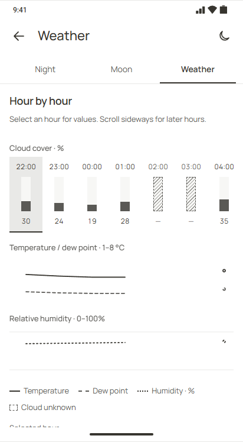
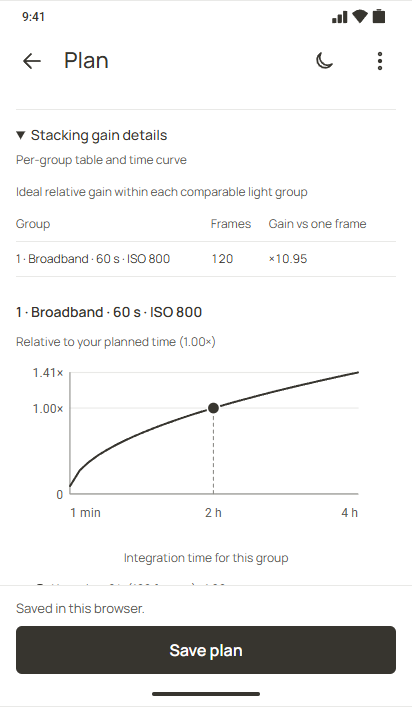
Текст збережено 22 px; чотири destinations розміщено в два ряди без розривів усередині слова.
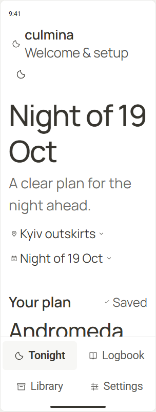
Фокус і повна видимість кнопки перевірені геометрично на360/412px у трьох темах. Відмова Save не записує дані.
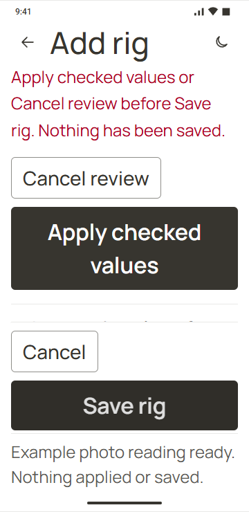